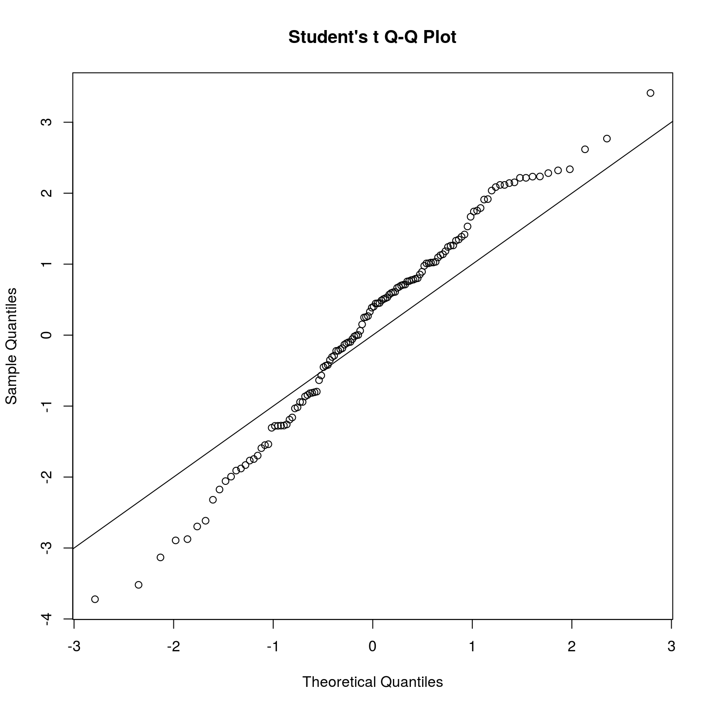
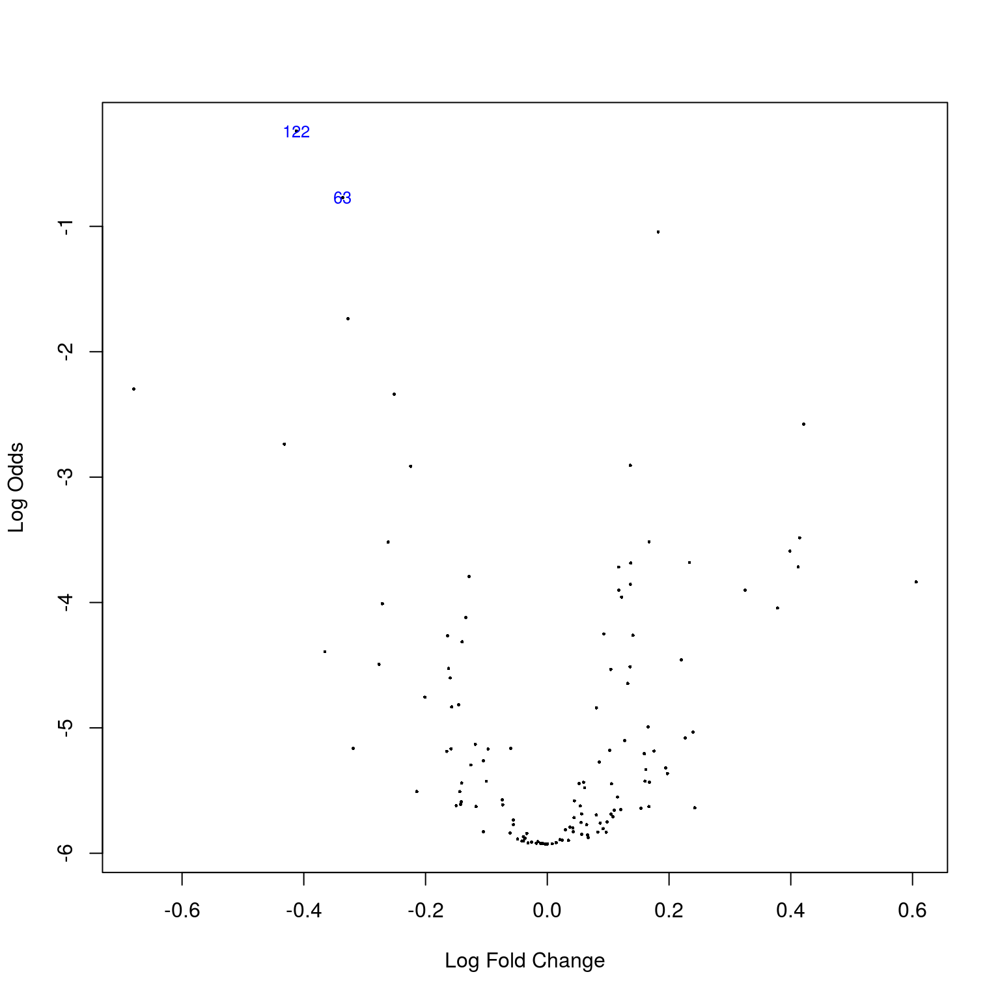
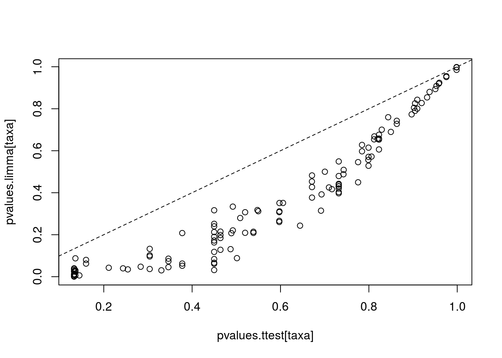

Load example data:
# Load libraries
library(microbiome)
library(ggplot2)
library(dplyr)
# Probiotics intervention example data
data(peerj32) # Source: https://peerj.com/articles/32/
pseq <- peerj32$phyloseq # Rename the example data
# Get OTU abundances and sample metadata
otu <- abundances(transform(pseq, "log10"))
meta <- meta(pseq)Identify most significantly different taxa between males and females using the limma method. See limma homepage and limma User’s guide for details. For discussion on why limma is preferred over t-test, see this article.
# Compare the two groups with limma
library(limma)##
## Attaching package: 'limma'## The following object is masked from 'package:BiocGenerics':
##
## plotMA# Prepare the design matrix which states the groups for each sample
# in the otu
design <- cbind(intercept = 1, Grp2vs1 = meta[["gender"]])
rownames(design) <- rownames(meta)
design <- design[colnames(otu), ]
# NOTE: results and p-values are given for all groupings in the design matrix
# Now focus on the second grouping ie. pairwise comparison
coef.index <- 2
# Fit the limma model
fit <- lmFit(otu, design)
fit <- eBayes(fit)
# Limma P-values
pvalues.limma = fit$p.value[, 2]
# Limma effect sizes
efs.limma <- fit$coefficients[, "Grp2vs1"]
# Summarise
library(knitr)
kable(topTable(fit, coef = coef.index, p.value=0.1), digits = 2)| logFC | AveExpr | t | P.Value | adj.P.Val | B | |
|---|---|---|---|---|---|---|
| Uncultured Clostridiales II | -0.41 | 1.37 | -3.72 | 0 | 0.06 | -0.24 |
| Eubacterium siraeum et rel. | -0.34 | 1.67 | -3.52 | 0 | 0.06 | -0.77 |
| Clostridium nexile et rel. | 0.18 | 2.84 | 3.41 | 0 | 0.06 | -1.04 |
| Sutterella wadsworthia et rel. | -0.33 | 1.50 | -3.13 | 0 | 0.10 | -1.74 |
Quantile-Quantile plot and volcano plot for limma
# QQ
qqt(fit$t[, coef.index], df = fit$df.residual + fit$df.prior); abline(0,1)
# Volcano
volcanoplot(fit, coef = coef.index, highlight = coef.index)
Order the taxa with t-test for comparison and validation purposes. The differences are small in this simulated example, but can be considerable in real data. For discussion on why limma is preferred over t-test, see this article.
# Compare the two groups with t-test
library(dplyr)
pvalues.ttest <- c()
male.samples <- dplyr::filter(meta, gender == "male")$sample
female.samples <- dplyr::filter(meta, gender == "female")$sample
for (tax in rownames(otu)) {
pvalues.ttest[[tax]] <- t.test(otu[tax, male.samples], otu[tax, female.samples])$p.value
}
# Multiple testing correction
pvalues.ttest <- p.adjust(pvalues.ttest, method = "fdr")
# Compare p-values between limma and t-test
taxa <- rownames(otu)
plot(pvalues.ttest[taxa], pvalues.limma[taxa])
abline(0,1,lty = 2)
Rapid quantification of continuous associations can be done with the lm_phyloseq wrapper function.
This uses the limma model to generate a table of P-values and effect sizes. Note that no confounding variables taken into account in this wrapper. See the limma homepage for more detailed analyses.
data(atlas1006)
source(system.file("extdata/lm_phyloseq.R", package = "microbiome"))
tab <- lm_phyloseq(atlas1006, "age")
kable(head(tab), digits = 3)